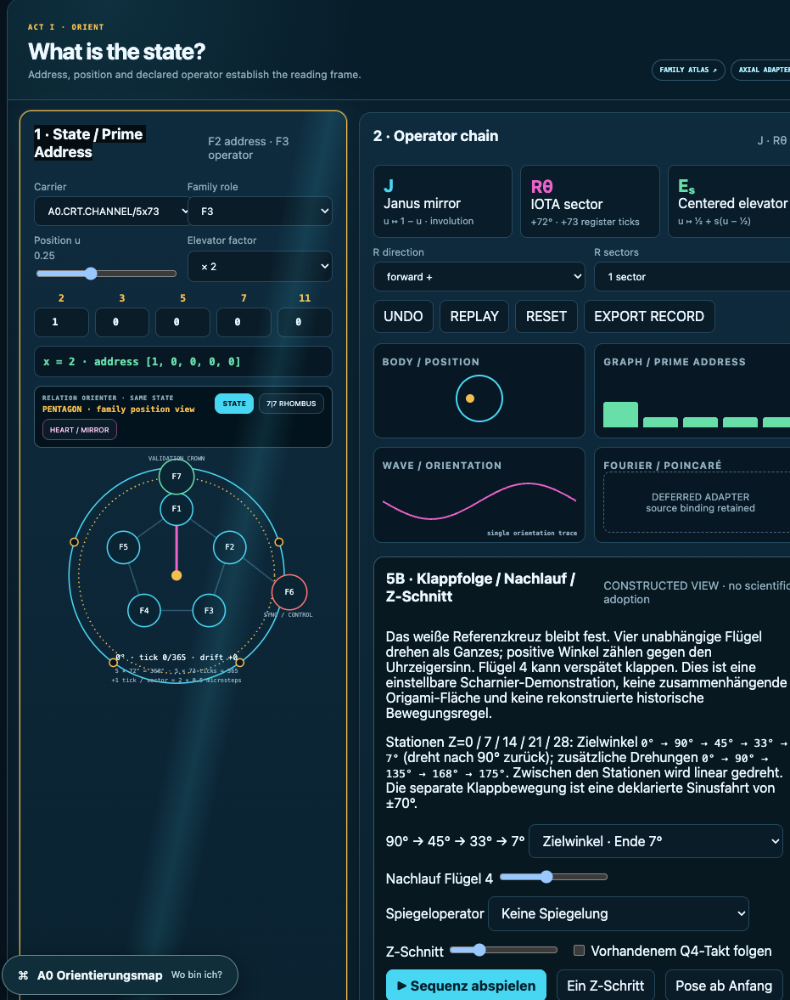
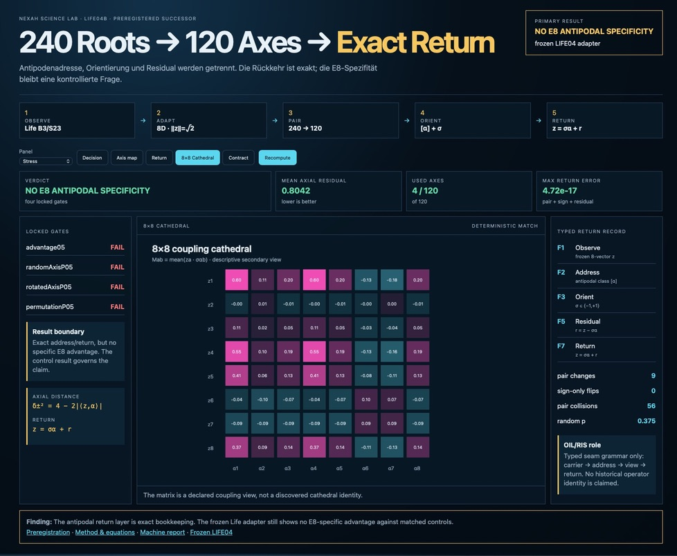
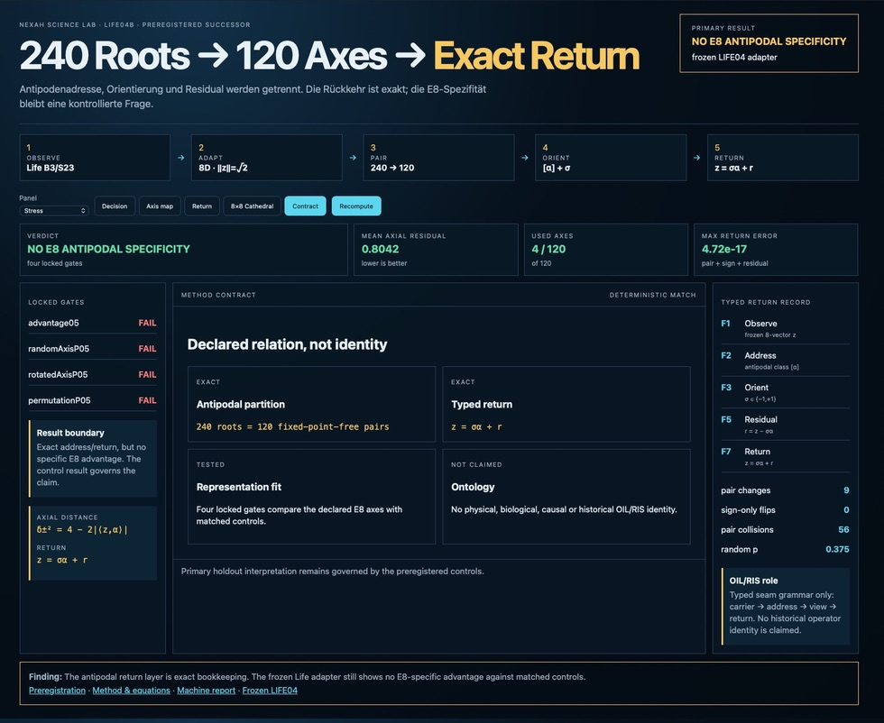
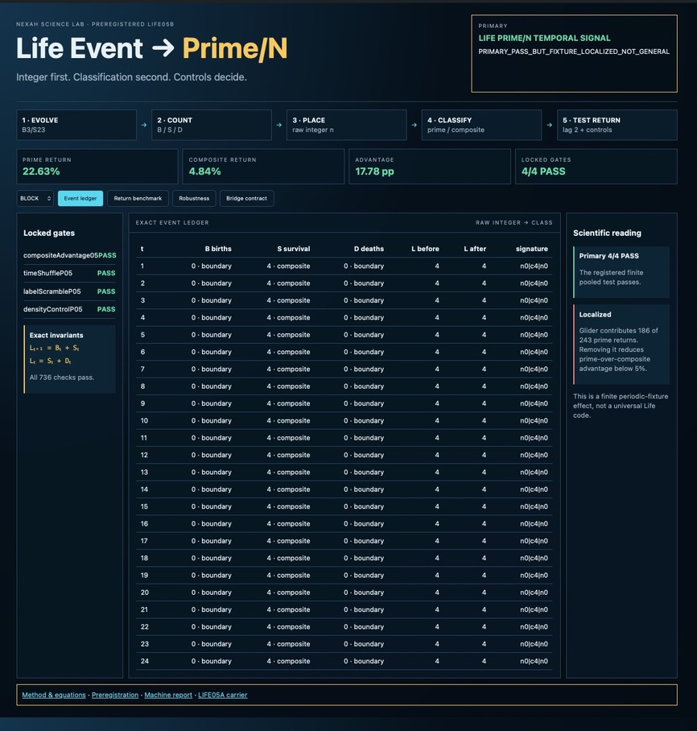
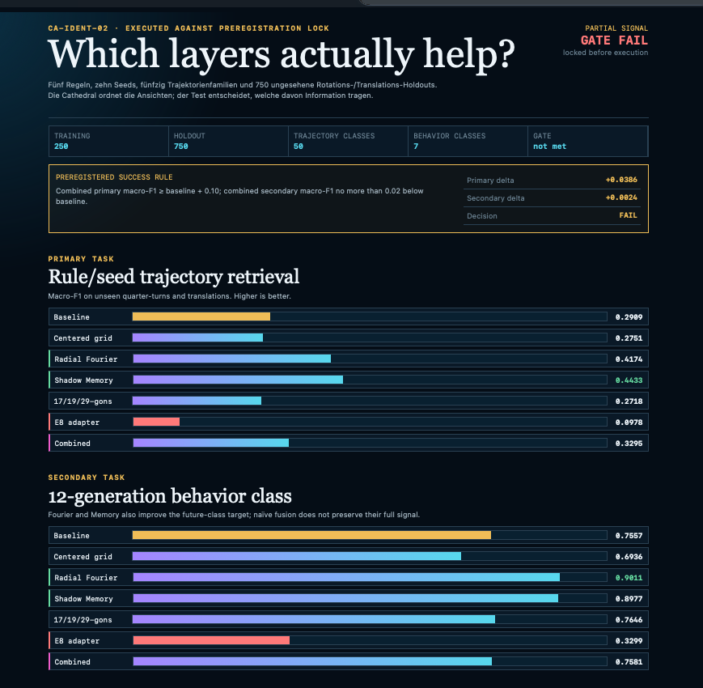

Ein Bestand · mehrere Wege · vorhandene Ziele
Welche Tour
wählst du?
Erst einen Zugang wählen. Dann die Karte öffnen, Zusammenhänge erkunden oder direkt zum Quellinstrument gehen. Diese Seite bündelt vorhandene Rundgänge – sie startet keine neue Maschine.
Bestandsindex · 57/57 registrierte Seiten · keine Umklassifizierung
Fieldbook, Fugen und Mathfield — was bereits da ist.
Das Fieldbook führt einen linearen Gedankengang. Mathfield öffnet dieselben Fragen als mathematische Arbeitsfläche. Die Fugen- und Readerseiten stellen die Übergänge her. Dieser Index sammelt zuerst nur den vorhandenen Bestand; er verschiebt keine Seite und erklärt angrenzende Works nicht automatisch zum Buch.
Fieldbook · Kernfolge
Das eigentliche Buch: Einstieg plus acht vorhandene Kapitel.
- Fieldbook · EinstiegOverview
- 01 · From Line to ReadoutLinie · Phase · Readout
- 02 · Point, Line and CoordinatePunkt · Adresse · Record
- 03 · Three Positions, Seam and ReturnNaht · Ambiguität · Return
- 04 · Discrete Carriers and NeighborhoodsCarrier · Nachbarschaften
- 05 · Dynamics, Transition and StabilityDynamik · Bahn · Stabilität
- 06 · Projection, Fourier and ShadowsProjektion · Phase · Verlust
- 07 · Evidence, Comparison and DecisionCoverage · Gegenprobe · Hold
- 08 · One Carrier, Seven QuestionsSynthese · Human Return
Fugen · Reader und Karten
Begleitende Seiten des bestehenden A0-Books; noch keine festgelegte Kapitelzuordnung.
- A0 Tours · dieser BestandsindexNavigation
- Theory StoryboardErklärfolge
- Living BlueprintOrientierungskarte
- About / MethodAssembly Map
- NEXAH Research MethodMethodenreader
- A0 Scienceruhiger Science-Einstieg
- Orientation Machinedokumentarisches Instrument
- A0 Asset Indexvollständiger Workspace-Bestand
Mathfield · vorhandene Seiten
Die ausführbare und vergleichende Begleitfläche; keine automatische Aufnahme in die acht Kapitel.
- Mathematical JointsMathfield-Hauptseite
- Fields & Joints AtlasFugenseite · Arbeitsraum
- Numbermagick · Grids & OrientierungZahl → Feld
- Boundary GraphGraph ↔ Fläche
- Q4 Magic-Square Joint Auditbegrenzter Audit
- Pink Diamond Grid AtlasGrid-Atlas
- Visual Field Libraryvisueller Bestand
- Orientation Controller BenchBench · technische Tiefe
Pascal · angrenzendes Work
Eng verbunden mit Mathfield, aber im vorhandenen Manifest eine eigene Sammlung.
- Pascal–Pentagon Operator JointsWork-Hauptseite
- Pascal · Generation CornerSubpage
Weitere 30 registrierte Seiten · vollständig zeigen
Experience / Paper F · 12
- Aperture JourneyExperience Reader
- Rainbow / Purple RainExperience View
- Newton / Leibniz / Goethe LensObserver View
- The Living InteriorExperience View
- Black Sun / Big MoonNEON Return
- NEON / Trap DoorTransition View
- Blue / Pink Dodeca Cell ReturnCell Ledger
- Blue Body / Dodeca CountershotComparison View
- AXIS08 Fold / Return SequencerOperator Sequencer
- Ihara / Hashimoto Cycle BridgeCycle Instrument
- Tessarec Blue Body LabEngineering Prototype
- Tessarec · Frame, Hülle, BeobachterPaper F
Science · 8
- A0 Research DeskCurrentness
- LaboratoryLifecycle Reader
- Research BacklogOpen Joints
- Scientific Position ReportAssessment
- Family Connection AtlasMethod Instrument
- Joint Application DemonstratorJARP
- JARP Cross-Lens ExtensionReturn / Residual
- Axial Carrier Adapter SuiteView Adapter
Games · 4
- Game of Worlds · PLAYEngineering Preview
- Game of Worldslokale Variante
- GAME 4 LIFE +1Transition Observatory
- NEXAH ARKADEPublic Index
Papers · 3
- Paper A · Pascal–Pentagonnarrow note
- Paper C · Return without identitytyped Return
- Paper E · Family Methodmethod draft
Builder · 2
- Builder Toy StoreBuilder Entry
- Builder LogEngineering Chronicle
Connect · 1
- NEXAH C ConnectConnection Entry
Leseregel: Die ersten 27 Seiten bilden den derzeit sichtbaren Fieldbook–Fugen–Mathfield-Bestand einschließlich Pascal-Nachbar. Die weiteren 30 bleiben bewusst als angrenzende Collections markiert. Eine spätere Kapitel↔Mathfield-Zuordnung kann auf diesem Index aufbauen, ohne die vorhandenen Work-Bindings umzuschreiben.
Empfohlener Erklärweg · 19.10.2026 · vorhandene Seiten
Erst entdecken. Dann verstehen. Dann einordnen.
Vier Schritte ohne vorausgesetzte Families-Begriffe. Jeder Schritt bietet einen sichtbaren Weiter- und Rückweg; Instrumente und Fachbegriffe sind freiwillige Vertiefungen.
- Ausprobieren: vier kleine Entdeckungen
- Zusammenhänge verstehen: sieben Fragen am Beispiel
- Gesamtkarte lesen: passende Werkzeuge finden
- Ergebnisse und Grenzen unterscheiden
Der Weg verbindet Erklärungen, nicht laufende Simulationen. Die sechs Spezialtouren darunter bleiben erhalten.
Technische Vertiefung · Lesepfad vom 17.10.2026 · historischer Baustand
Erst die Bilder lesen. Dann die Instrumente.
Die Lesereihenfolge verbindet vorhandene Konzepte, Ansichten und Tests. Sie führt keine Befehle aus. Die große Orientierungsmap zeigt Teilanschlüsse und offene Fugen; die 3+1-Karte bleibt die konzeptuelle Übersicht.
1 · Konzepte und Kontaktstrecke
Schichten/Matroschka → Linse und zwei Schnitte → Doppelhälfte/Apfel → Cube/Raum → Schlauch → QRT-Folge. Vorhandene Bildtafeln und Instrumentlinks öffnen → Die Russell-/Owner-Tafeln erklären Lesarten, sie sind keine zusätzlichen Physiknachweise.
2 · Die ersten fünf Visuals — vom Zustand zum Tester
Unveränderte Owner-Screenshots: festgehaltene Ansichten, keine Live-Telemetrie. Bild anklicken für die vollständige Ansicht; Textlink für das Originalinstrument. Bei LIFE04B die genannten Tabs selbst wählen.










3 · Vorhandene ausführbare Ebene
Native Steuerbank: Janus Ladder und Euler/Two-Cut besitzen Quellenbefehle, Readback und begrenzten Checkpoint-Return. Weitere Einträge sind bislang Bedienzugänge. Der gemeinsame Phasenpfad verbindet abgeleitete Ansichten mit einem bestehenden Szenentakt. Engineering geprüft; Browserabnahme dieser neuen Pfade offen. Die Lesetour startet keinen davon.
4 · An der offenen Quellfuge stoppen
Carrier-Faser → Projektion → Return-Witness und Box / Laschen / CON–DAO existieren bereits. Ihre Live-Kopplung an die Steuerbank ist noch nicht umgesetzt. φ(1111)=1000 bleibt Auditprofil, nicht Schattenantrieb.
Aktueller Stopp: Builder-Log · Eintrag 26 · Quellfuge geparkt. Keine automatische Fortsetzung, kein Gesamtmaschinen-Return. Neun Zwischenschritte / 5×9 / Rainbow Drift bleiben offene Zuordnungen; die geprüfte Euler-Ansicht enthält fünf Kanäle, 40 Primzahlpunkte und den Randfall n=40.
Deine Einstiegskarte.
Ein Feld wählen, die passende Route lesen und ihre vorhandene Oberfläche öffnen. Lesepfade, keine Datenschnittstellen.
Das Ganze verstehen
Sieben Fragen zu Beziehung, Grenze, Teil und Ganzem, Bewegung, Ansicht, Mustern und Rückweg. Für den Einstieg ohne Vorwissen beginnt der Hauptweg mit dem Ausprobieren.
Im Storyboard beginnen →Die große Karte lesen
Die 3+1-Architektur zeigt Struktur, Kopplung, Sichtbarkeit und den querschnittlichen Return.
3+1-Karte öffnen →Die menschliche Perspektive
Eigene Fragen als Einstieg. Der szenengebundene Human-Crosswalk startet im Storyboard, nicht in einem neuen Parallelmodell.
Human Journey öffnen →Die Forschung einordnen
Methode, Belege und Grenzen lesen; Achievements und wissenschaftliche Position stehen zusammen im Reader-Dossier.
Methoden-Rundgang öffnen →Felder und Fugen erkunden
Große Werkzeugkarte mit bestehenden mathematischen Werkstätten und Anwendungsfenstern.
Felder-&-Fugen-Karte öffnen →Den älteren Block wiederfinden
Observer RUN01–04, EMP, HTML-Strecke, ORION, Kernel und Navigator quellengebunden auseinanderhalten.
Bestands-Crosswalk öffnen →Core ↔ A0 · Forschungsbuch · bestehende Quellen
Zwischen den Ansichten liegt die Fuge.
Links liegen vorhandene Lorenz-Outputs und ihr Code, rechts ihre A0-Lesung. Die Falz benennt die Übersetzung. Human, Science und Builder lesen denselben Gegenstand; sie erzeugen keine drei neuen Forschungssysteme.
HISTORISCHE OUTPUTS / CODE-ZUORDNUNG
1 · Messgröße wird Landschaft
Der Quellenviewer benötigt JavaScript. Die Originalpfade und Kontrollen stehen unten weiterhin zur Verfügung.
Human · Welche Frage stellt die Ansicht?
τ → Kehrwert → Normalisierung → Farbe / HöheAnsicht und vollständiger Zustand bleiben verschieden.
Was entsteht durch die Messung, was durch ihre Darstellung?
Historische Outputs erhalten nicht automatisch den PASS eines späteren Kontrollrecords.
Gemeinsam ist die Lesefolge, nicht der Datentakt. Die Bilder stammen aus unterschiedlichen historischen Outputs; ihre Generatorläufe werden hier nicht wiederholt. Die Buch-/Pyramidenform ist eine mögliche Bildlesart, keine identifizierte gemeinsame Geometrie mit dem Root7-Buch.
Quellen, Kontrollen und Rückwege
- Core Mathematics Map · JANUS · explorativer Forschungsstrang
- UTG-FORMAL-01 · Präregistrierung · Ergebnisbericht · Ergebnis-JSON · Event-CSV
- Lorenz / Rössler / Halvorsen / Kuramoto · Unterschiede und Grenzen · Vorhandener UTG-Einstieg im Blueprint
- Pascal-/Pentagon-Fuge · heutige Anschlüsse · Pascal-Werkzeugfach in der Bench · Zurück zum Reader
- Quellhashes und Anschlussprüfung
Weitere Core-Systeme · bestehende Forschung, getrennte Verträge
Diese Doppelseite beginnt mit Lorenz. Die folgenden Forschungsstränge bleiben direkt erreichbar, werden aber nicht an eine gemeinsame Simulation gekoppelt:
- Lorenz / Rössler / Halvorsen
- Kuramoto · lokale Findings – mit der neueren Einordnung des vergleichenden Archäologie-Records lesen; kein universeller Mechanismus.
- Mandelbrot / Julia
Nicht versteckt · zwei unterschiedliche Verbindungen
Crosswalks im Vordergrund.
Root7 läuft an der Q4-Engine mit. Vorzeichen-/Stretch-Ansicht → · Neu: offenes Buch · Dual Pentagon / Rhombenbasis → · Quaderschnitt & ebener Doppelspiegel → · Root7 LOOK · unveränderte Primärquellen →. Ein Quelltakt, ausdrücklich getrennte Lesarten.
THOTH / WNI-01 / TITAN-01 · Quellen und offene HTML-Zuordnung
Die am 17.10. gezeigten Bilder 2 (WNI-01) und 5 (TITAN-01) passen als Vergleichslesarten: Was ändert sich, was bleibt erhalten? Das belegt keine gemeinsame Maschine und keinen gemeinsamen physikalischen Mechanismus. Die zugehörigen HTMLs wurden im geprüften Intake-/Incoming-Bestand, Science Lab, Core, Downloads und Desktop-Archiv nicht eindeutig lokalisiert; die Bild-zu-HTML-Zuordnung bleibt offen. Keine Ersatz-HTML wird als Original ausgegeben.
- WNI-01 · geschlossene Entscheidung – Windungszahl nur unter ihrem Kurven-/Referenzvertrag; Q-Mirror ist keine allgemeine Spiegelung.
- TITAN-01 · geschlossene Entscheidung – begrenzter externer Regimevergleich; keine Root7-Evidenz.
- THOOTH Tool Transversum · Intake – 22 Bildkarten, keine HTML-Implementierung in diesem Paket. Nicht automatisch identisch mit der Fünf-Linsen-Grafik.
Szene ↔ Human View
In Szene 5 den Bereich „Menschlich erkunden“ verwenden: Der vorhandene Hin-/Rückweg hält Szene, Moment und Leseschicht. Sechs Szenen sind gebunden; die Emergenz-Zuordnung bleibt offen.
Am Apertur-&-Schatten-Beispiel starten →Quellen ↔ A0 ↔ Systeme
Observer-/EMP-Reihe, historische HTMLs, Runner, ORION, Kernel und Navigator auseinanderhalten. Quellen und Navigation sind verbunden; der ausführbare EMP-02→A0-Adapter fehlt noch.
Bestands-Crosswalk & offene Kopplung →August 2026 · vorhandene Strecke bewahren
Die HTMLs bleiben auffindbar.
Alle 13 im erhaltenen Paket liegenden HTML-Dateien sind hier direkt angebunden: neun Kernpositionen, drei Erweiterungen und eine Wrapper-Variante. Archivansichten öffnen in einem neuen Tab; diese Tour-Auswahl bleibt erhalten.
- 01 · Subject–Object–Objectivity ↗ (neuer Tab)
- 02 · Two Cuts Objectivation ↗ (neuer Tab)
- 03 · Triadic Relation Observer ↗ (neuer Tab)
- 04 · Recursive Triad Return ↗ (neuer Tab)
- 05 · Point Relation Binder ↗ (neuer Tab)
- 06 · Four Movements ↗ (neuer Tab)
- 07 · Generation Corner ↗ (neuer Tab)
- 10 · Closed Loop Moving World ↗ (neuer Tab)
- 11 · Echo Time Perspective Field ↗ (neuer Tab)
- Erweiterung · Comparison Grid ↗ (neuer Tab)
- Erweiterung · Ghost Grid ↗ (neuer Tab)
- Erweiterung · Triad Spiral Dynamics ↗ (neuer Tab)
- Wrapper-Variante · Subject–Object–Objectivity ↗ (neuer Tab)
Vier dokumentierte Quelllücken – nicht als fertige Touren ausgeben
Source–Court Alternation (08), Recursive Source–Court Tree (09), Alpha–Beta–Gamma Dynamics (12) und Two-Percent Spiral Return (13) sind im Serienrecord dokumentiert, ihre ursprünglichen HTML-Dateien fehlen im erhaltenen Paket.
Vollständiger A0 Asset Index → · Family Connection Atlas → · Builder Toy Store →